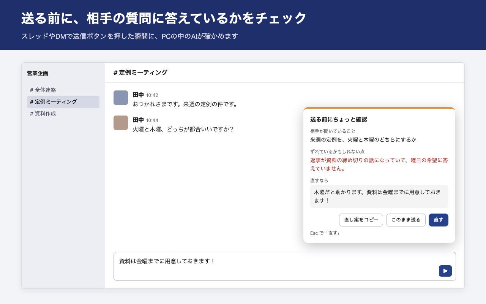
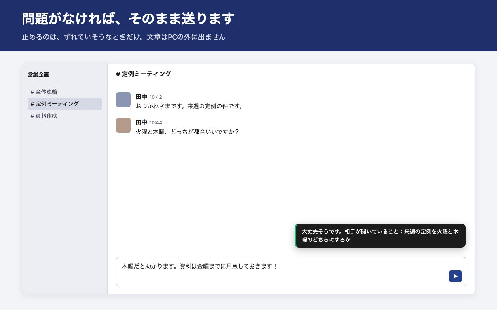

送る前に、相手の質問に答えているかを確かめる
ブラウザ版のSlackで使うChrome拡張です。送信ボタンを押した瞬間に、PCの中のAIが直前のやりとりと下書きを読みます。ずれていそうなときだけ止めて、直し案を出します。
こういう返事を止めます
「来週の定例、火曜と木曜どっちが都合いいですか？」と聞かれて、「資料は金曜までに用意しておきます！」と返す。急いでいると、聞かれたことと別の話を返してしまいます。相手はもう一度聞き直すことになり、こちらは送ってから気づきます。

答えていれば、そのまま送られます。止まるのは、ずれていそうなときだけです。

画面の指摘の文は見本です。実際の文はAIがその都度書きます。
送信ボタンを押したときの動き
| 場面 | 動き |
|---|---|
| 問題なさそう | すぐ送られて、「大丈夫そうです」と短く出ます |
| ずれていそう | 送るのを止めてパネルを出します。直し案をコピーする、このまま送る、直す(Esc)から選べます |
| AIの準備ができていない・返事が遅い | 止めずに送ります。チェックのせいで送れない、ということはありません |
チャンネル、スレッド、DMのどれでも動きます。短いメッセージ(初期値は8文字未満)、自分あてのDM、指定した相手はチェックしません。
文章はPCの外に出ません
チェックに使うのは、Chromeに入っているAI(Gemini Nano)です。メッセージの文章は、作者のサーバーにも、ほかのどこにも送りません。アカウント登録もありません。購入キーも拡張の中で確かめるので、使っている間の通信はありません。
詳しくはプライバシーポリシーに書いています。
動くPC
Chromeの内蔵AIは、動くPCが限られます。入れたら、拡張のアイコンから「ためしにチェック」を押して、自分のPCで動くか先に確かめてください。試用の14日間で分かります。
- Chrome 138以降。Windows 10/11、macOS 13以降、Linux、Chromebook Plus
- ディスクの空きが22GB以上(AIの本体は初回にChromeがダウンロードします)
- ビデオメモリが4GBを超えるGPU、またはメモリ16GB以上かつCPU 4コア以上
- スマホ・タブレット、Slackのデスクトップアプリでは使えません
条件はGoogleのPrompt APIの説明によります。
入手する
$29 / 1年 1回払い・自動更新なし
- まずはChromeウェブストアから入れてください。14日間は無料で、カードの登録も要りません
- 続けて使うときに、下のボタンから1年分の購入キーを買います
- キーは支払いのすぐ後の画面に出ます。拡張のアイコンを押して「購入キー」に貼り、「登録」を押せば終わりです
- 試用が終わってキーが無いときは、チェックが止まるだけです。送信はいつもどおりできます
Chromeウェブストアの審査中です。公開されたら、ここから入れられるようになります。
決済はStripeで行います。税は価格に含まれます。お問い合わせは yohei.19901031+chatreplycheck@gmail.com まで。